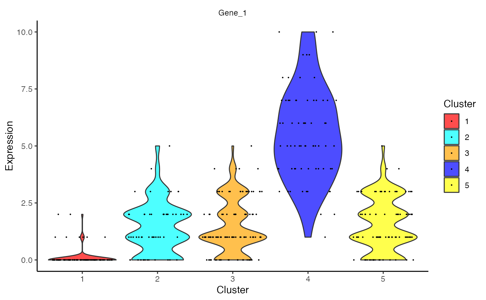
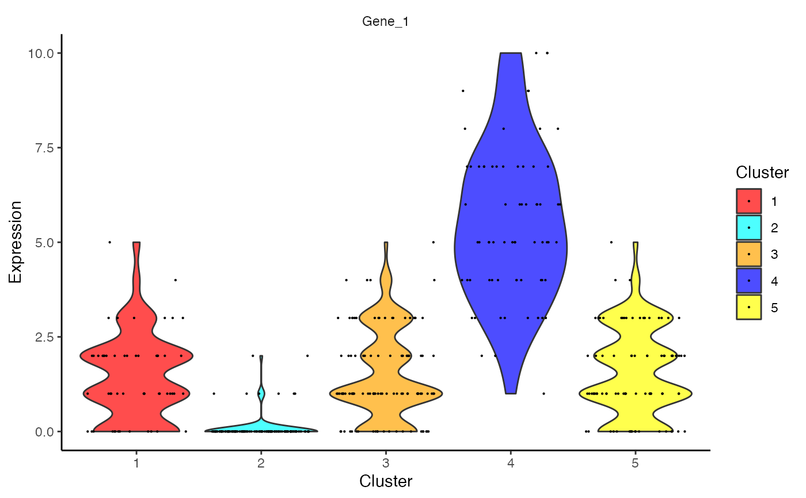

Outputs a violin plot for feature expression data.
plotCeldaViolin( x, celdaMod, features, displayName = NULL, useAssay = "counts", altExpName = "featureSubset", exactMatch = TRUE, plotDots = TRUE, dotSize = 0.1 ) # S4 method for SingleCellExperiment plotCeldaViolin( x, features, displayName = NULL, useAssay = "counts", altExpName = "featureSubset", exactMatch = TRUE, plotDots = TRUE, dotSize = 0.1 ) # S4 method for ANY plotCeldaViolin( x, celdaMod, features, exactMatch = TRUE, plotDots = TRUE, dotSize = 0.1 )
| x | Numeric matrix or a SingleCellExperiment object
with the matrix located in the assay slot under |
|---|---|
| celdaMod | Celda object of class "celda_G" or "celda_CG". Used only if
|
| features | Character vector. Uses these genes for plotting. |
| displayName | Character. The column name of
|
| useAssay | A string specifying which assay
slot to use if |
| altExpName | The name for the altExp slot to use. Default "featureSubset". |
| exactMatch | Logical. Whether an exact match or a partial match using
|
| plotDots | Boolean. If |
| dotSize | Numeric. Size of points if |
Violin plot for each feature, grouped by celda cluster
data(celdaCGSim, celdaCGMod) plotCeldaViolin(x = celdaCGSim$counts, celdaMod = celdaCGMod, features = "Gene_1")